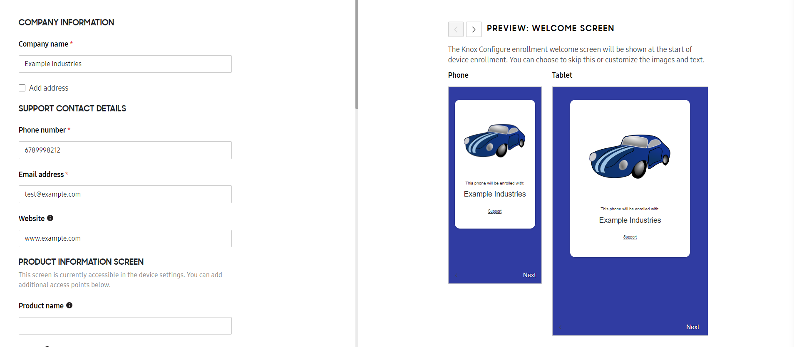
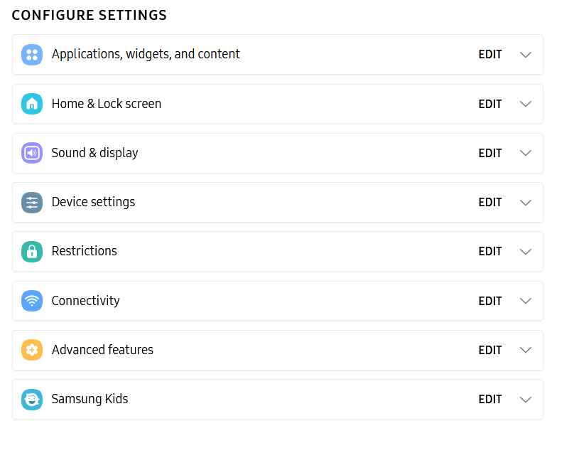

Step 2: Create a profile
Last updated January 15th, 2025
Device profiles are the central piece of Knox Configure’s functionality.
A profile is a collection of settings used to configure one or more devices with preset settings, restrictions, apps, and other content. When you assign a profile to a device, the device is automatically configured with the settings contained in the profile.
To create a new profile, click Profiles in the navigation menu on the Knox Configure console, then click CREATE PROFILE in the upper-right corner of the screen.
Enter basic profile information
-
On the Profile info screen, give your profile a name and choose the type of device you’re creating the profile for.
-
If you’re creating a profile for phones or tablets, you’ll need to confirm that the Device level and Knox version of the profile match the target devices.
Keep in mind that if you select Other Samsung Devices, Knox Configure features such as routine applets, APN settings, SIM lock, device lock, Kiosk mode, shared device, enterprise billing, auto power on, KDA enrollment, disable camera, disable USB classes, disable OMC mode, Wi-Fi APN provisioning, and download block are not available.
Select configuration type
On the Configuration mode screen, choose whether you want to configure the profile with the Setup or Dynamic edition of Knox Configure. Setup profiles are designed for one-time deployment for devices that won’t need to be updated again, while Dynamic profiles can be updated over the air after deployment. Click Feature Comparison Table to view a complete comparison.
-
If you’re creating a Setup edition profile, you can choose to have the Knox Cloud agent uninstall itself from the device after configuring the device. This will leave no trace of the configuration service on the device after configuration.
-
If you’re creating a Dynamic edition profile, select whether you want to configure devices in Normal mode or ProKiosk mode.
For details on the different types of profiles, see About Knox Configure profiles.
Set up enrollment
The Enrollment info screen differs depending on the Knox Configure edition you select for the profile.
Setup edition
On the Enrollment info screen, set up the enrollment process for devices configured with this profile. The information you provide on this screen is shown to the device user when they start device enrollment. Required settings are labeled with asterisks.
You can preview the enrollment screen flow before it’s saved and committed to the profile in the right pane. Use the < > navigation arrows to scroll through each screen in the enrollment flow.
If you’re editing an existing profile, you can undo any changes made and revert to the most recent save by clicking CANCEL ALL CHANGES.
Company information
Under COMPANY INFORMATION, enter the name of your enterprise in Company name. You can also select Add address to add your enterprise’s address. This information is shown on the enrollment welcome screen — you can preview these details in the right pane.
Support contact details
The information entered in the SUPPORT CONTACT DETAILS and PRODUCT INFORMATION SCREEN sections are accessible to the device user from the Configuration service. For details, see Use the Configuration service.
Under SUPPORT CONTACT DETAILS, provide a Phone number and Email address for device users to reach out for support when encountering issues with their configured device. You can also add a link to your enterprise’s Website.
Product information screen
Under PRODUCT INFORMATION SCREEN, you can customize the Configuration service.
-
Enter the Product name to display in the product information screen. If left blank, the name of the profile is used by default.
Optionally, select Add a non-dismissible notification to add a persistent notification that the device user can tap to quickly access the Configuration service. You can customize the notification with your own Application name and Notification message.
-
Under Branding, you can configure the following enrollment screen elements:
- Background fill — Select a background color or upload an image to use your own branding for the enrollment screen background. The background image cannot exceed 2 MB in size.
- Logo — Upload a logo to show on the enrollment screen. The logo image cannot exceed 1 MB in size and should have a 1:1 aspect ration for an optimal fit on the enrollment screen.
You can preview your changes in the right pane.

Device enrollment
-
Under Enrollment preferences, select one of the following options:
- Run the Setup Wizard and prevent end users from canceling enrollment — Select this option to prohibit the device user from cancelling enrollment and ensure that the setup wizard launches.
- Allow end users to cancel enrollment — Select this option to display a Cancel button on the lower left-hand side of the welcome screen and provide device users with an option to cancel the enrollment screen flow.
-
Under Welcome screen, optionally select any of the following settings:
- Skip welcome screen — Select this option to bypass the welcome screen while enrolling the device. The welcome screen will still display on devices enrolled using the Knox Deployment App.
- Customize the welcome screen text — Select this option to add a message to the welcome screen. You can enter up to a 400 characters. You can preview the welcome screen text in the right pane.
- Hide support link — Select this option to remove the support link from the welcome screen.
-
Under Agreements, select Add Terms & Conditions and/or Privacy Policy to add an additional terms and conditions or privacy policy that the device user must agree to during the enrollment process. You can view a preview of the agreements screen in the right pane.
-
Under QR code for enrollment, you can generate a QR code that can be used to enroll devices with the profile after the device has been set up. To generate a QR code, click ADD QR CODE.
By default, QR code enrollment is only enabled for devices uploaded by a reseller. You can bypass this by selecting Also allow QR code enrollment for devices not uploaded by a reseller. However, this will allow anyone with access to the QR code to enroll their device.
If you want the QR code to automatically configure a Wi-Fi network for the device, select Add Wi-Fi network configuration to QR code and add the network SSID Name, Security type, and Password (if applicable).
Once enrolled with a QR code, the device user can’t assign a different profile to the device using a QR code until the device has been unassigned. See the Unassign a device section of Enroll a device for details.
-
Under Accessory for enrollment, you can also choose to enroll devices by connecting an accessory after out-of-box experience (OOBE) enrollment. For details on how to set up accessory enrollment, see Knox Configure Accessories.
If you choose to enroll devices using the Knox Deployment App, QR code enrollment, or accessory enrollment, select a License that will be used to assign this profile to devices enrolled using the above methods.
If a license is not selected here, this profile will not display as an option in the Knox Deployment App or work with QR code-based enrollment. Only one license can be selected. If the current license is consumed or expired, you will need to assign another license.
If there are no listed licenses available within the License list, select the Enter License Key option. From the displayed Enter license key screen, provide a License name and License key, then click ADD. The newly created license is available for selection from the License list.
When you’re finished, save the profile as a draft or click CONFIGURE SETTINGS to move on to the next step.
Dynamic edition
On the Enrollment info screen, set up the enrollment process for devices configured with this profile. The information you provide on this screen will be shown to the device user when they start device enrollment. Required settings are labeled with asterisks.
You can preview the enrollment screen flow before it’s saved and committed to the profile in the right pane. Use the < > navigation arrows to scroll through each screen in the enrollment flow.
If you’re editing an existing profile, you can undo any changes made and revert to the most recent save by clicking CANCEL ALL CHANGES.
Company information
Under COMPANY INFORMATION, enter the name of your enterprise. You can also select Add address to add your enterprise’s address. This information is shown on the enrollment welcome screen — you can preview these details in the right pane.
Support contact details
The information entered in the SUPPORT CONTACT DETAILS is accessible to the device user from the Configuration service. For details, see Use the Configuration service.
Provide a Phone number and Email address for device users to reach out for support when encountering issues with their configured device. You can also add a link to your enterprise’s Website.
Product information screen
Under PRODUCT INFORMATION SCREEN, you can customize the Configuration service.
-
Enter the Product name to display in the product information screen. If left blank, the name of the profile is used by default.
Optionally, select Add a non-dismissible notification to add a persistent notification that the device user can tap to quickly access the Configuration service. You can customize the notification with your own Application name and Notification message.
-
Under Branding, you can configure the following enrollment screen elements:
- Background fill — Select a background color or upload an image to use your own branding for the enrollment screen background. The background image cannot exceed 2 MB in size.
- Logo — Upload a logo to show on the enrollment screen. The logo image cannot exceed 1 MB in size and should have a 1:1 aspect ration for an optimal fit on the enrollment screen.
You can preview your changes in the right pane.
Device enrollment
-
Under Enrollment preferences, select one of the following options:
-
Run the Setup Wizard and prevent end users from canceling enrollment — Select this option to prohibit the device user from cancelling enrollment and ensure that the setup wizard launches.
-
Allow end users to cancel enrollment — Select this option to display a Cancel button on the lower left-hand side of the welcome screen and provide device users with an option to cancel the enrollment screen flow.
-
Skip Setup Wizard and enable FRP Bypass — Select this option to bypass the setup wizard and prevent the device from being locked to a private Google account due to Factory Reset Protection (FRP).
This feature is disabled by default. To use this feaeture, you must request access from a Samsung Admin. After an internal customer review and use-case verification, the feature will be enabled for your tenant.
-
-
Under Welcome screen, optionally select any of the following settings:
- Skip welcome screen — Select this option to bypass the welcome screen while enrolling the device. The welcome screen will still display on devices enrolled using the Knox Deployment App.
- Customize the welcome screen text — Select this option to add a message to the welcome screen. You can enter up to a 400 characters. You can preview the welcome screen text in the right pane.
- Hide support link — Select this option to remove the support link from the welcome screen.
-
Under Agreements, optionally select the following options:
- Skip the Samsung Knox Privacy Policy — Select this option to prevent the Samsung Knox Privacy Policy from displaying on devices during enrollment. This option is only available if you agree to a one-time a disclaimer that opens each time you create a new profile.
- Add additional Terms & Conditions and/or Privacy Policy — Select this option to add an additional terms and conditions or privacy policy that the device user must agree to during the enrollment process. You can view a preview of the agreements screen in the right pane.
-
Under QR code for enrollment, you can generate a QR code that can be used to enroll devices with the profile after the device has been set up. To generate a QR code, click ADD QR CODE.
By default, QR code enrollment is only be enabled for devices uploaded by a reseller. You can bypass this by selecting Also allow QR code enrollment for devices not uploaded by a reseller. However, this will allow anyone with access to the QR code to enroll their device.
If you want the QR code to automatically configure a Wi-Fi network for the device, select Add Wi-Fi network configuration to QR code and add the network SSID Name, Security type, and Password (if applicable).
-
Under Accessory for enrollment, you can also choose to enroll devices by connecting an accessory after out-of-box experience (OOBE) enrollment. For details on how to set up accessory enrollment, see Knox Configure Accessories.
If you choose to enroll devices using the Knox Deployment App, QR code enrollment, or accessory enrollment, select a License that will be used to assign this profile to devices enrolled using the above methods.
If a license is not selected here, this profile will not display as an option in the Knox Deployment App or work with QR code-based enrollment. Only one license can be selected. If the current license is consumed or expired, you will need to assign another license.
If there are no listed licenses available within the License list, select the Enter License Key option. From the displayed Enter license key screen, provide a License name and License key, then click ADD. The newly created license is available for selection from the License list.
When you’re finished, save the profile as a draft or click CONFIGURE SETTINGS to move on to the next step.
Configure profile settings
On the Configure settings screen, choose the settings you want to include in the profile.
You can see configurable settings in the toolbox pane on the left. Click a setting to open it and, if applicable, view a preview in the right pane. The icon for each setting group will turn blue after you edit it to denote that the settings have been changed.
Creating custom branding for devices is one of the most popular use cases for Knox Configure, so under Branding settings, you can quickly access settings commonly used for rebranding.
For details, see Configure profile settings.
When you’re finished configuring the profile settings, save the profile as a draft or click SUMMARY to move on to the last step. If you’re editing an existing profile, you can also undo any changes made and revert to the most recent save by clicking CANCEL ALL CHANGES.
Review and save the profile
On the Summary screen, review the details of your new profile in the left pane and view a preview of the enrollment screens in the right pane.
Configured settings are grouped together and displayed next to their icons on the Configure settings screen for easy navigation.

You can download the profile summary as a PDF or save the profile as a draft by clicking MORE ACTIONS.
If you’re editing an existing profile, you can undo any changes made and revert to the most recent save by clicking CANCEL ALL CHANGES.
If you’re ready to create the profile, click SUBMIT. List any modifications and add an optional comment, and click Submit to save the profile. Your new profile is now visible on the Profiles screen.
On this page
Is this page helpful?